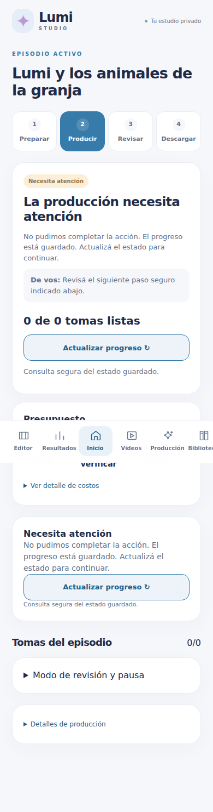
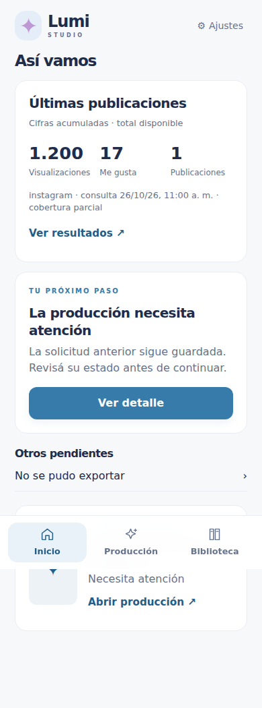
Frontend anterior e48d4dd y frontend simplificado. Chromium con viewport de 390 × 844; fixtures aislados y medios sintéticos locales. No es una prueba de iPhone. Las capturas son de página completa: la barra fija aparece a la altura del viewport original.


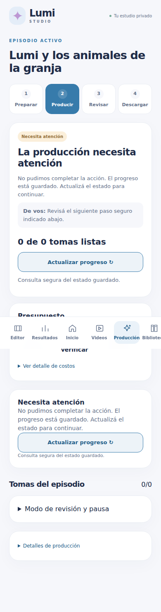
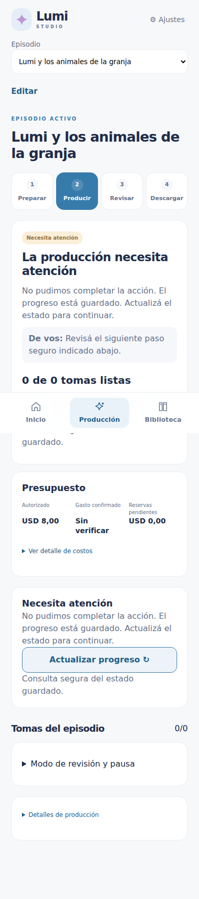
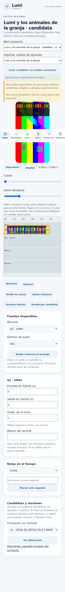
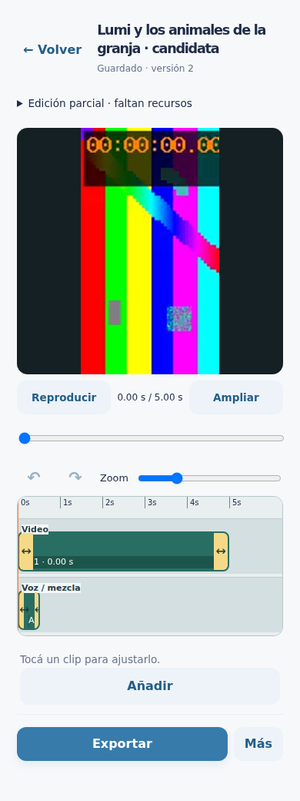
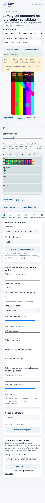
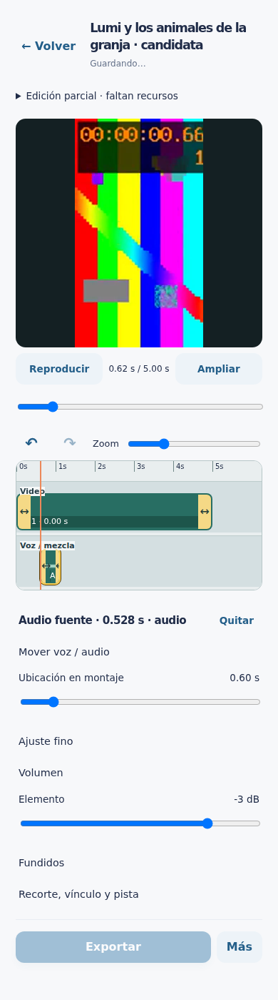
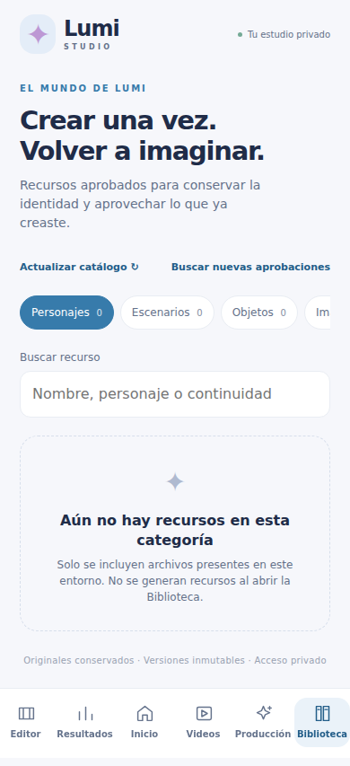
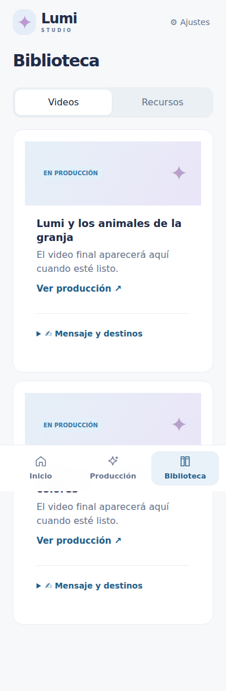
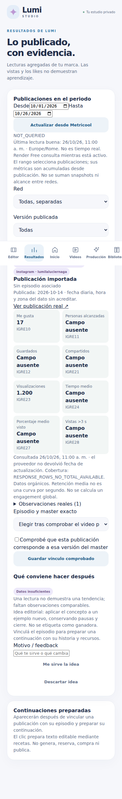
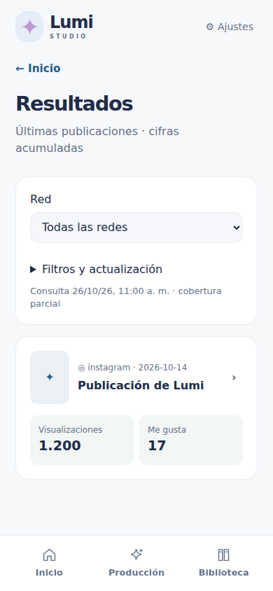
La exportación real de EP004 sigue pendiente. Ver el informe y las mediciones JSON de esta carpeta.